Tier 1 · 90/100

Tau Ceti
RA 26.0170° Dec -15.9375°
- Exoplanet system nearby: tau Cet g, tau Cet h, tau Cet f
- Doppler drift rate 1.5186 Hz/s consistent with technological origin
- High SNR: 35.2
- Frequency in known RFI band: X-band satellite
- Doppler drift rate 0.0879 Hz/s consistent with technological origin
- Doppler drift rate 0.0428 Hz/s consistent with technological origin
Tier 1 · 90/100

HD 136352
RA 230.4401° Dec -48.3188°
- Exoplanet system nearby: HD 136352 d, HD 136352 d, HD 136352 b
- Doppler drift rate 1.3476 Hz/s consistent with technological origin
- High SNR: 24.9
- not cross-checked (limit)
Tier 1 · 90/100
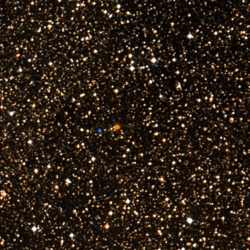
Proxima Centauri
RA 217.4288° Dec -62.6793°
📡 NASA Mission Photos

Hubble's Best Image of Alpha C
- Exoplanet system nearby: Proxima Cen b, Proxima Cen b, Proxima Cen d
- Doppler drift rate 1.9942 Hz/s consistent with technological origin
- High SNR: 21.3
- not cross-checked (limit)
Tier 1 · 80/100
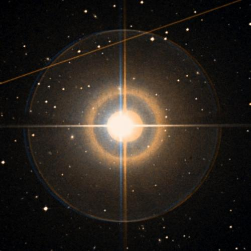
Epsilon Eridani
RA 53.2327° Dec -9.4582°
📡 NASA Mission Photos

Epsilon Eridani Inner Asteroid

Young Solar System in the Maki

Double the Rubble Artist Conc
- Exoplanet system nearby: eps Eri b, eps Eri b, eps Eri b
- Doppler drift rate 0.2142 Hz/s consistent with technological origin
- not cross-checked (limit)
Tier 3 · 40/100

Tier 3 · 40/100
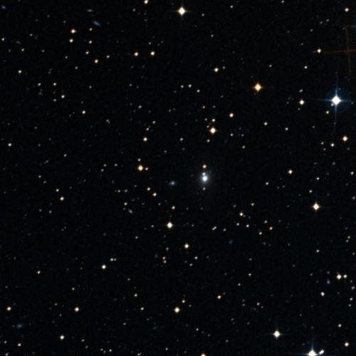
Tier 3 · 40/100
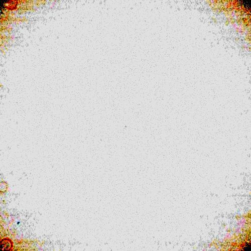
Vega
RA 279.2347° Dec 38.7837°
📡 NASA Mission Photos

Massive Smash-up at Vega Arti

B-33 Vega Turrets

B-33 Vega Turrets
- not cross-checked (limit)
Tier 3 · 40/100
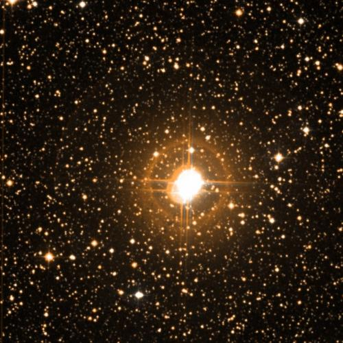
Tier 3 · 40/100
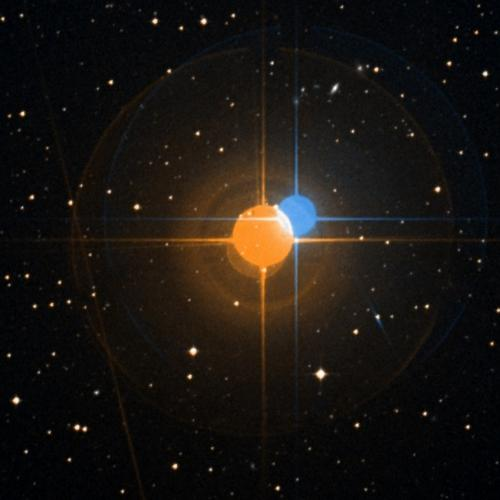
Tier 3 · 40/100
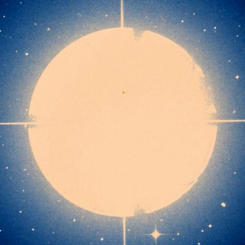
Fomalhaut
RA 344.4127° Dec -29.6223°
📡 NASA Mission Photos

Circumstellar Disk Around Foma

Herschel Spots Comet Massacre
- not cross-checked (limit)
Tier 3 · 40/100

Ross 128
RA 176.9351° Dec 0.8048°
📡 NASA Mission Photos

KSC-2009-5090

KSC-2009-5148

KSC-2009-4451
- not cross-checked (limit)
Tier 3 · 40/100

Tier 3 · 40/100

TOI-2018
RA 229.8374° Dec 29.2079°
📡 NASA Mission Photos

Toy Dog Portrait

Toy Dog Portrait

Toy Dog Portrait
- not cross-checked (limit)
Tier 3 · 40/100

Tier 3 · 40/100
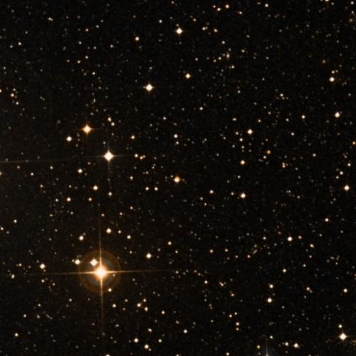
TOI-700
RA 97.0957° Dec -65.5786°
📡 NASA Mission Photos

TOI 700 Artists' Illustration

TOI 700 Habitable Zone Diagram
- not cross-checked (limit)
Tier 3 · 40/100
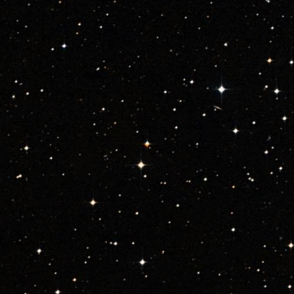
Tier 3 · 40/100
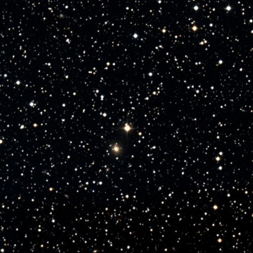
HAT-P-11
RA 297.7102° Dec 48.0819°
📡 NASA Mission Photos

KENNEDY, PRESIDENT JOHN F. - M
- not cross-checked (limit)
Tier 3 · 40/100
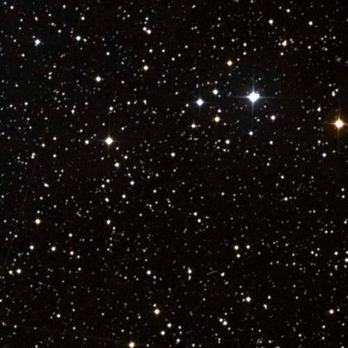
Kepler-42
RA 292.2196° Dec 44.6174°
📡 NASA Mission Photos

Where Kepler Sees

Current Configurations of ISS

Current Configurations of ISS
- not cross-checked (limit)
Tier 3 · 40/100
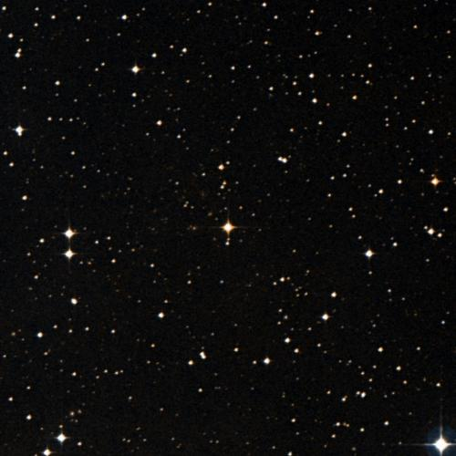
Tier 3 · 40/100
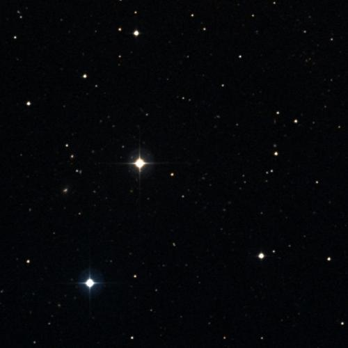
Tier 3 · 40/100
CXO J182239.2-181442
RA 275.6630° Dec -18.2450°
- not cross-checked (limit)
Tier 3 · 40/100
4XMM J091234.2+303201
RA 138.1430° Dec 30.5340°
- not cross-checked (limit)
Tier 3 · 40/100
4XMM J143812.7-231456
RA 219.5530° Dec -23.2490°
- not cross-checked (limit)
Tier 3 · 40/100
4XMM J052211.8-692334
RA 80.5490° Dec -69.3930°
- not cross-checked (limit)